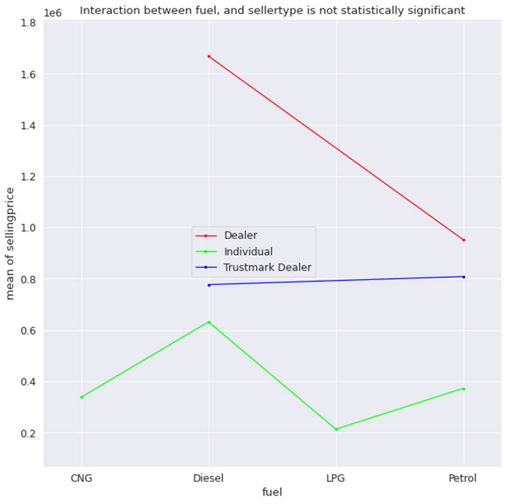
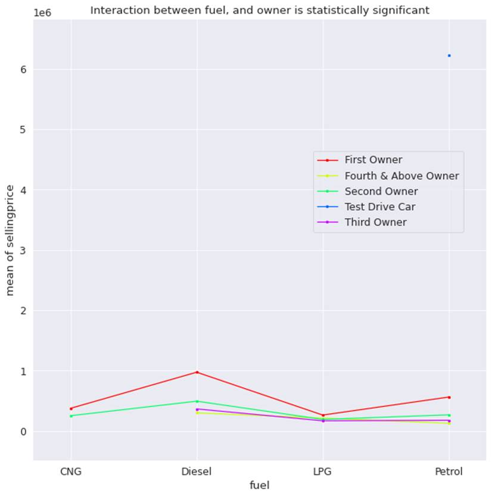

5.1: Interaction Plot
The interaction plot is an extension
of two-way ANOVA, which tests if two factors affect the dependent variable. If
the p-value is below 0.05, we will believe that there is a significant
interaction effect between the two factors. Before that, let's understand what
is one-way and two-way ANOVA.
The one-way ANOVA tests variance in
the group means within a sample while considering only one categorical feature.
In the case of two-way ANOVA, it tests variance in the group means within a
sample while considering levels of two categorical features. It tests the
interaction between categorical features, for the continuous dependent
variables.
There are two steps for concluding
the relationship between two categorical features. In the first step, we
perform two-way ANOVA and check the p-value of the interaction effect. If the
interaction effect is significant, we perform the second step. In the second step,
we plot the relationship with the help of an interaction plot. Interaction plot
can help us understand the relationship visually. If the lines in the plot are
parallel, we can conclude that there is no interaction. On the other hand, if
lines intersect each other, we can say that there is an interaction among the
features. If lines neither intersect nor run parallel, we can say that there is
some degree of interaction.
The final decision of accepting or
rejecting the presence of interaction effect should be done after checking the
p-value of ANOVA. To avoid overfitting, we will perform ANOVA on training data
across all cross-validations. If the result is significant across all
cross-validations, we will consider it statistically significant and the interaction
effect valid.
For the hotel room booking dataset,
all the categorical features are derived either from the check-in date, or
quartile features from numerical features such as booking trend, and revenue.
Hence It will not be meaningful to do ANOVA between the dependent variable and
the categorical variables derived from the dependent variable. It will neither
be meaningful to perform ANOVA with only categorical variables derived from the
seasonality of the date feature.
Let s go through the car sales
regression dataset. We will use a few categorical features to explain the
interaction plot. We will start with the fuel and sellertype
categorical features against the dependent variable sellingprice .
Figure 5.1 shows the interaction plot between the features and the dependent
variable..

Figure 5.1: Interaction plot of fuel
and sellertype against sellingprice
From the graph we can see that
dealer car have the highest price, regardless of the fuel type. This is
followed by petrol cars sold by Trustmark dealers. LPG, followed by CNG cars
has the lowest prices when sold by individual sellers. Although we can infer
these relationships from the graph, it was not validated by the p-value of
ANOVA for training data across all cross-validation samples. Also, none of the
lines in the plot cross each other. Hence, we conclude that the interaction
effect is not present between fuel and sellertype .
Now let s look at the relationship
between fuel and owner on car selling price in figure 5.2.

Figure 5.2: Interaction plot of fuel
and owner against sellingprice
From figure 5.2 we can see that
petrol test drive cars have the highest price. We can infer this from the
position of the blue dot at the top right section of the plot. This is followed
by diesel cars sold by first owners, which have the second highest price.
Petrol cars sold by first owners fetch less price than diesel cars sold by
first owners.
Second, third, and fourth owners
intersect at LPG for all owner types, which means LPG cars are sold at similar
prices, regardless of the number of times it has been sold in the past. The
only exception is the first owner, for whom the selling price is relatively
higher.
We also tested the relationship with
ANOVA for training data across 5 cross-validation samples. In all the samples,
the relationship came as significant. We can finally create an interaction
effect feature between these two categorical features.
The best way to go about finding the
interaction effect through an interaction plot is that first, we should perform
ANOVA across different samples of training data in cross-validation. If it came
significant in all the cross-validation samples, we can then use an interaction
plot to get an intuitive explanation of the type of relationship that exists.
We can finally use it for creating interaction effect features.